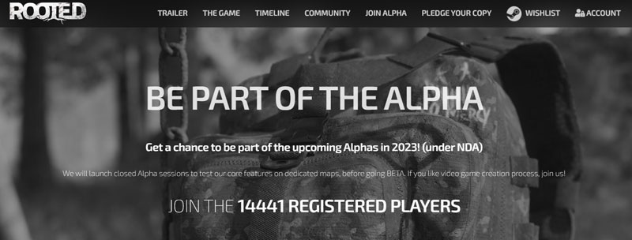
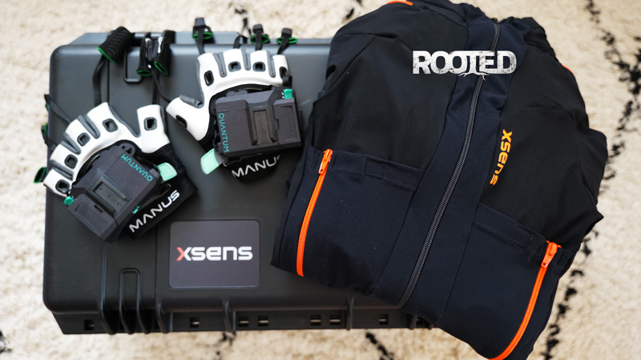
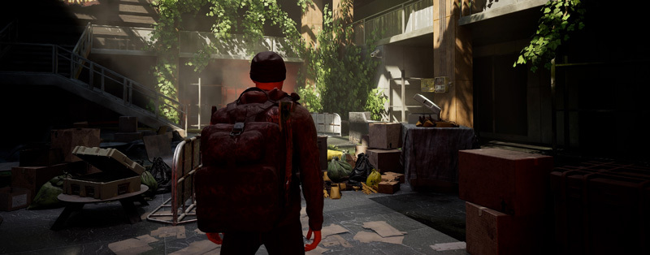
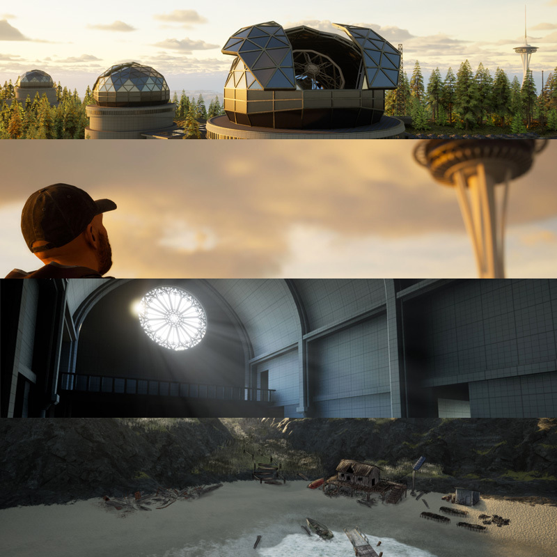

Alpha Session 1: Rooted Enters a New Era
Step into the future of Rooted, with a sneak peek into our first Alpha session and the amazing power of Xsens motion capture.
All the news > Alpha Session 1: Rooted Enters a New Era
Published on Jan 01, 2023
Happy New Year to the survivors!
After an incredible year of 2022, where your interest in Rooted kicked our predictions into high gear with over 450,000 wishlists on Steam, a Kickstarter campaign that reached 200% of its goal, incredible support on the site with already over 25,000USD in pledges, over 15,000 registered people wishing to participate in the alpha sessions, we are there!
FIRST ALPHA SESSION: EXPLORATION AND SURVIVAL, MONASTERY
The alpha sessions will be progressive, and will allow us to validate the main features of the game and to test/improve the solidity of Rooted's foundations.
Each new major alpha session will be an opportunity to add a new feature to those already tested, to arrive at the end of the year on a Beta. This doesn't mean that it will be finished, but we will have made good progress!
Important: it is good to remember that the Alpha version will be the most buggy and the least representative of the game in its final version. Thanks!
I know you want to know when it will be available. I really like the month of May, don't you? (Subject to change).
HOW TO PARTICIPATE IN THE ALPHA
To join the Alpha:
- try to win your access by registering on our website
- support the development and pledge the game, and choose your alpha, beta, early access, always on our website
https://rootedthegame.com

OUR PROGRESS
- Motion Capture
Thanks to your support, we were able to acquire a complete Xsens Motion Capture system, which allows us to record all the animations we want. This is way beyond our expectations, but your support allows us to do crazy things. Thank you for your support!

- Gameplay Footage
We will soon share some gameplay footage with you, because as we said before, we wanted to have our own animations for this. We look forward to your feedback!

FOLLOW OUR PROGRESS CLOSELY
On social networks, and especially on our Discord server, we share our progress by showing WIPs of our POIs, their evolution.

We also take into account all the ideas proposed by the community in the dedicated rooms. Don't hesitate to join us to exchange with the developers and the 7K+ members!
https://discord.gg/invite/rootedthegame
We wish you a great year 2023!
ROOTED